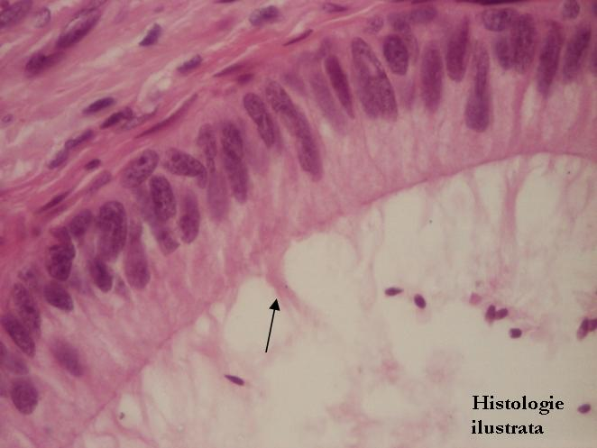
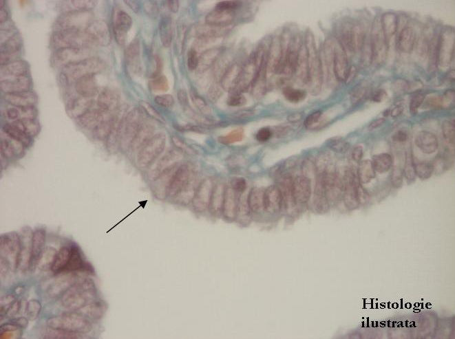
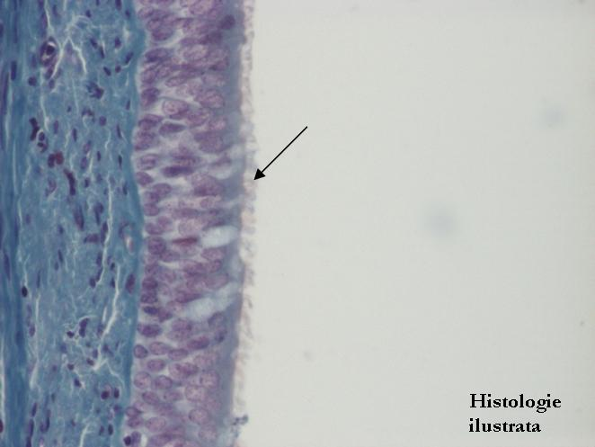

Chap.1 - Tissu épithélial
1.2. Spécialisations du pôle apical




Fig. 36 - Plateau strié – villosités intestinales, H.E. X 400
Fig. 37 - Stéréocils – épithélium de l'épididyme, H.E. X 400
Fig. 38 - Cils – épithélium de la trompe utérine,
T.S. X 400
Fig. 39 - Cils – épithélium respiratoire de la trachée, T.S. X 400